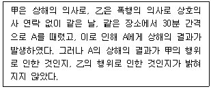
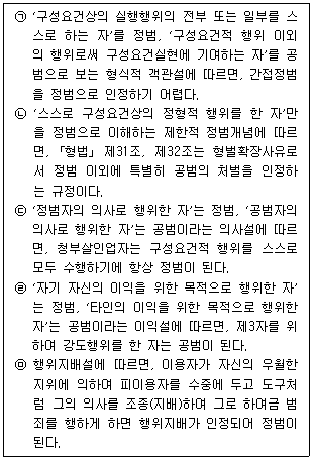
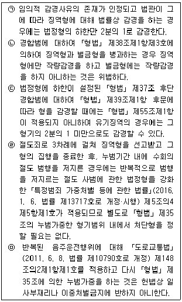
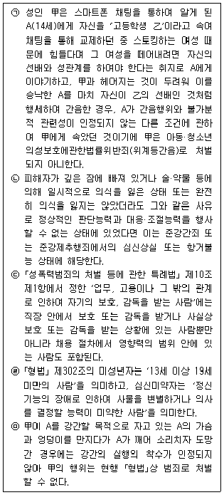
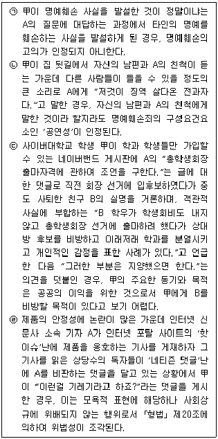
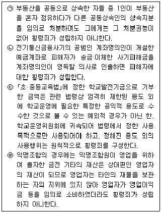

경찰공무원(순경)-형법 (2021-08-21 기출문제)
1. 죄형법정주의에 대한 설명으로 가장 적절하지 않은 것은?(다툼이 있는 경우 판례에 의함)
- ｢게임산업진흥에 관한 법률｣ 제28조제3호에서 게임물 관련 사업자에 대하여 '경품 등의 제공을 통한 사행성 조장'을 원칙적으로 금지하면서 제공이 허용되는 경품의 종류·지급기준·제공방법 등에 관한 구체적인 내용을 하위법령에 위임한 것은 경품의 환전이나 재매입 등의 우려가 없는 등 사행성을 제거할 수 있는 방법이 될 것이라는 예측이 불가능하여 포괄위임금지의 원칙에 반한다.
- ｢폭력행위등 처벌에 관한 법률｣ 제4조제1항에서 규정하고 있는 범죄단체 구성원으로서의 '활동'은 명확성의 원칙에 반하지 아니한다.
- 어떤 단체가 특정 후보자를 지지·추천하는지 여부를 ｢공직선거법｣ 제250조제1항에서 규정한 허위사실공표죄의 '경력등'에 관한 사실에 해당한다고 해석하는 것은 죄형법정주의에 반한다.
- ｢도로교통법｣(2018. 12. 24. 법률 제16037호로 개정되어 2019. 6. 25. 시행된 것) 제148조의2제1항에서 정한 '제44조제1항 또는 제2항을 2회 이상 위반한 사람'에 개정된 도로교통법이 시행된 2019. 6. 25. 이전에 구｢도로교통법｣ 제44조제1항 또는 제2항을 위반한 전과가 포함된다고 해석하는 것은 형벌불소급의 원칙에 반하지 아니한다.
(정답률: 알수없음)

2. 다음 사례에 대한 설명으로 가장 적절하지 않은 것은? (다툼이 있는 경우 판례에 의함)

- 이는 동시범의 문제로 ｢형법｣ 제19조가 아닌 ｢형법｣ 제263조가 적용되어야 한다.
- 만약 A의 상해가 甲의 행위가 아닌 乙의 폭행으로 인해 발생한 것으로 밝혀졌다면, 甲은 상해미수죄로 처벌된다.
- 만약 乙이 폭행을 했다는 것 자체가 불분명하다면, ｢형법｣ 제263조가 적용되지 아니한다.
- 만약 A에게 甲과 乙의 행위로 상해가 아닌 사망의 결과가 발생하였다면, ｢형법｣ 제263조가 적용되지 아니한다.
(정답률: 알수없음)
3. 고의와 과실에 대한 설명으로 가장 적절하지 않은 것은?(다툼이 있는 경우 판례에 의함)
- 채권자 A가 채무자 甲의 신용상태를 인식하고 있어 장래의 변제지체 또는 변제불능에 대한 위험을 예상하고 있거나 예상할 수 있었다면, 甲이 구체적인 변제의사, 변제능력, 거래조건 등 거래 여부를 결정지을 수 있는 중요한 사항을 허위로 말하였다는 등의 사정이 없는 한, 그 후 제대로 변제하지 못했다는 사실만으로 甲에게 사기죄의 고의가 있다고 볼 수 없다.
- 방조범은 정범의 실행을 방조한다는 방조의 고의와 정범의 행위가 구성요건에 해당하는 행위인 점에 대한 정범의 고의가 있어야 하나, 이 경우 정범의 고의는 적어도 정범에 의하여 실현되는 범죄의 구체적 내용을 인식할 것을 필요로 한다.
- 전기배선이 벽 내부에 매립 설치되어 건물 구조의 일부를 이루고 있다면 그에 관한 관리책임은 일반적으로 소유자에게 있다고 보아야 하나, 그 전기배선을 임차인이 직접 하였으며 그 이상을 미리 알았거나 알 수 있었다는 등의 특별한 사정이 있는 때에는 임차인에게도 그 부분의 하자로 인한 화재를 예방할 주의의무가 인정될 수 있다.
- 甲은 A와 함께 술을 마시고 중앙선에 서서 도로횡단을 중단한 상황에서 지나가는 차량의 유무를 확인하지 아니하고 고개를 숙인 채 서 있는 A의 팔을 갑자기 잡아끌어 무단횡단을 하다가 지나가던 차량에 A가 충격당하여 사망한 경우, 甲이 술에 취해있었다 하더라도 甲에게는 A의 안전을 위하여 차량의 통행 여부 및 횡단 가능 여부를 확인하여야 할 주의의무가 인정된다.
(정답률: 알수없음)
4. 피해자의 승낙에 대한 설명으로 가장 적절하지 않은 것은?(다툼이 있는 경우 판례에 의함)
- 甲이 동거 중인 A의 지갑에서 현금을 꺼내 가는 것을 A가 현장에서 목격하고도 만류하지 아니한 경우에는 이를 허용하는 A의 묵시적 의사가 있었다고 볼 수 있다.
- 건물의 소유자라고 주장하는 甲과 그것을 점유 관리하고 있는 A 사이에 건물의 소유권에 대한 분쟁이 계속되고 있는 상황에서 甲이 그 건물에 침입하는 경우에는 그 침입에 대한 A의 승낙이 있었다고 볼 수 없다.
- 甲이 乙과 공모하여 교통사고를 가장하여 보험금을 편취할 목적으로 乙에게 승낙을 받고 상해를 가한 경우에는 피해자의 승낙에 의하여 위법성이 조각된다고 할 수 없다.
- 甲은 자신의 아버지 A소유 부동산 매매에 관한 권한 일체를 위임받아 이를 매도한 후 갑자기 A가 사망하자 소유권이전에 사용할 목적으로 A가 자신에게 인감증명서 발급을 위임한다는 취지의 위임장을 작성하여, 주민센터 담당직원에게 제출한 경우에는 甲이 A가 승낙하였을 것이라고 기대하거나 예측한 것만으로도 사망한 A의 승낙이 추정된다.
(정답률: 알수없음)
5. ㉠부터 ㉤까지는 정범과 공범의 구별에 관한 학설에 대한 설명이다. 옳고 그름의 표시(O, X)가 바르게 된 것은?

- ㉠(X) ㉡(O) ㉢(X) ㉣(O) ㉤(X)
- ㉠(O) ㉡(X) ㉢(O) ㉣(O) ㉤(O)
- ㉠(O) ㉡(O) ㉢(X) ㉣(O) ㉤(O)
- ㉠(O) ㉡(O) ㉢(X) ㉣(X) ㉤(O)
(정답률: 알수없음)
6. 공동정범에 대한 설명으로 가장 적절하지 않은 것은? (다툼이 있는 경우 판례에 의함)
- 甲이 A를 살해하고자 A의 음료수 잔에 치사량의 독약을 넣고 사라진 후 그 사실을 알고 있는 乙이 독자적으로 A를 확실히 살해하고자 한번 더 치사량의 독약을 넣어 A가 이를 마시고 사망한 경우, 甲과 乙은 상호 간에 의사의 연락이 없어 공동정범이 성립되지 아니한다.
- 甲이 강도살인의 의사로 먼저 A를 살해한 직후 마침 그곳을 지나가던 乙이 이를 보고 甲의 양해하에 절취의 의사로 참가하여 甲은 A의 지갑과 현금을, 乙은 A의 시계와 금반지를 가져간 경우, 승계적 공동정범을 인정하더라도 乙은 살인에 대한 책임은 지지 아니한다.
- 행동대원 甲, 乙, 丙은 조직의 두목으로부터 지시를 받고 상대조직 행동대장 A를 살해하기로 공모하였으나, 甲은 쇠파이프 등을 들고 차량에 탑승하던 중 사태의 심각성을 실감하고 범행에 휘말리기 싫어서 조용히 혼자 빠져나와 택시를 타고 집으로 갔다. 이후 乙과 丙이 공모한 대로 A의 사무실로 가서 A를 살해한 경우, 甲에게는 살인죄의 공동정범이 성립한다.
- 조직의 보스 甲은 부하인 乙과 반대조직의 보스 A를 살해하기로 공모하고, 甲은 자신의 사무실에서 진행 상황을 실시간으로 보고 받고 乙이 A의 사무실로 가서 A를 살해한 경우, 공모공동정범을 인정하는 견해에 따르면 甲에게는 살인죄의 공동정범이 성립한다.
(정답률: 알수없음)
7. 부작위범에 대한 설명으로 가장 적절한 것은? (다툼이 있는 경우 판례에 의함)
- 임대인 甲은 자신의 여관건물에 대하여 임차인 A와 임대차계약을 체결하면서 A에게 당시 그 건물에 관하여 법원의 경매개시결정에 따른 경매절차가 진행 중인 사실을 알리지 아니한 경우, A가 등기부를 확인 또는 열람하는 것이 가능하였다면 기망행위가 있었다고 볼 수 없어 甲은 사기죄로 처벌되지 아니한다.
- 甲이 특정 시술을 받으면 아들을 낳을 수 있을 것이라는 착오에 빠져 있는 A에게 그 시술의 효과와 원리에 관하여 사실대로 고지하지 아니하고 아들을 낳을 수 있는 시술인 것처럼 가장하여 일련의 시술 등을 행하고 의료수가 및 약값의 명목으로 금원을 교부받은 경우, 甲은 사기죄로 처벌된다.
- 甲이 A와 토지 지상에 창고를 신축하는데 필요한 형틀공사 계약을 체결한 후 그 공사를 완료하였는데 A가 공사대금을 주지 않자 이를 받기 위해 토지에 쌓아 둔 건축자재를 치우지 않은 경우, 甲은 업무방해죄로 처벌된다.
- 경찰공무원 甲이 지명수배 중인 범인 A를 발견하고도 직무상 의무에 따른 적절한 조치를 취하지 아니하고 오히려 A를 도피하게 하는 행위를 한 경우, 甲은 범인도피죄와 직무유기죄로 처벌된다.
(정답률: 알수없음)
8. 형의 가중·감경에 대한 설명으로 옳지 않은 것은 모두 몇 개인가? (다툼이 있는 경우 판례에 의함)

- 1개
- 2개
- 3개
- 4개
(정답률: 알수없음)
9. 죄수에 대한 설명으로 가장 적절하지 않은 것은? (다툼이 있는 경우 판례에 의함)
- ｢형법｣ 제131조제1항 수뢰후부정처사죄에 있어서 단일하고도 계속된 범의 아래 일정 기간 반복하여 일련의 뇌물수수 행위와 부정한 행위가 행하여졌고 뇌물수수 행위와 부정한 행위 사이에 인과관계가 인정되며 피해법익도 동일한 경우에는 최후의 부정한 행위 이후에 저질러진 뇌물수수 행위도 최후의 부정한 행위 이전의 뇌물수수 행위 및 부정한 행위와 함께 수뢰후부정처사죄의 포괄일죄가 된다.
- 미성년자를 약취한 후 강간 목적으로 가혹한 행위 및 상해를 가하고 나아가 강간 및 살인미수를 범한 경우에는 약취한 미성년자에 대한 상해 등으로 인한 특정범죄가중처벌등에관한법률위반죄와 미성년자에 대한 강간 및 살인미수행위로 인한 성폭력범죄의처벌등에관한특례법위반죄가 성립하고, 상해의 결과가 피해자에 대한 강간 및 살인미수행위 과정에서 발생한 것이라면 각 죄는 상상적 경합 관계에 있다.
- 공무원이 직무관련자에게 제3자와 계약을 체결하도록 요구하여 계약을 체결하게 한 행위가 제3자뇌물수수죄와 직권남용권리행사방해죄의 구성요건에 모두 해당하는 경우에 제3자뇌물수수죄와 직권남용권리행사방해죄는 상상적 경합 관계에 있다.
- 택시운전을 방해하는 과정에서 택시운전사를 폭행한 경우에는 피해자에 대한 폭행행위가 동일한 피해자에 대한 업무방해죄의 수단이 되었다 하더라도 그 폭행행위를 불가벌적 수반행위라 볼 수 없다.
(정답률: 알수없음)
10. 약취와 유인의 죄에 대한 설명으로 가장 적절한 것은? (다툼이 있는 경우 판례에 의함)
- 미성년의 자녀를 부모가 함께 동거하면서 보호·양육하여 오던 중 부모의 일방이 어떠한 폭행, 협박이나 불법적인 사실상의 힘을 행사함이 없이 그 자녀를 데리고 종전의 거소를 벗어나 양육환경이 더 나은 곳으로 옮겨 자녀에 대한 보호·양육을 계속한 경우에 상대방 부모의 동의가 없었다면 미성년자약취죄가 성립한다.
- 미성년자 혼자 머무는 주거에 침입하여 강도 범행을 하는 과정에서 미성년자와 그 부모에게 폭행·협박을 가하여 일시적으로 부모와의 보호관계가 사실상 침해·배제된 경우에는 미성년자약취죄가 성립한다.
- 약취행위는 피해자를 그 의사에 반하여 자유로운 생활관계 또는 보호관계로부터 범인이나 제3자의 사실상 지배하에 옮기는 행위를 말하며, 폭행 또는 협박을 수단으로 사용하는 경우에 그 폭행 또는 협박의 정도는 상대방을 실력적 지배하에 둘 수 있을 정도이면 족하고 반드시 상대방의 반항을 억압할 정도의 것임을 요하지는 아니한다.
- 미성년자의 어머니가 교통사고로 사망하여 아버지가 미성년자의 양육을 외조부에게 맡겼으나, 교통사고 배상금 문제로 분쟁이 발생하자 아버지가 학교에서 귀가하는 미성년자를 그의 의사에 반하여 강제로 사실상 자신의 지배하에 옮긴 경우에는 미성년자약취죄가 성립하지 아니한다.
(정답률: 알수없음)
11. 강간과 추행의 죄에 대한 설명으로 옳은 것을 모두 고른 것은?(다툼이 있는 경우 판례에 의함)

- ㉠㉡㉢
- ㉡㉢㉣
- ㉡㉣㉤
- ㉢㉣㉤
(정답률: 알수없음)
12. 명예에 관한 죄에 대한 설명으로 옳은 것은 모두 몇 개인가?(다툼이 있는 경우 판례에 의함)

- 1개
- 2개
- 3개
- 4개
(정답률: 알수없음)
13. 업무방해죄에 대한 설명으로 가장 적절하지 않은 것은?(다툼이 있는 경우 판례에 의함)
- 다른 사람이 작성한 논문을 자신의 단독 혹은 공동으로 작성한 논문인 것처럼 학술지에 제출하여 발표한 논문연구실적을 부교수 승진심사 서류에 포함하여 제출하였지만, 당해 논문을 제외한 다른 논문만으로도 부교수 승진 요건을 월등히 충족하고 있었다면 위계에 의한 업무방해죄가 성립하지 아니한다.
- 주한외국영사관에 비자발급을 신청함에 있어 신청인이 제출한 허위의 자료 등에 대하여 업무담당자가 충분히 심사하였으나 신청사유 및 소명자료가 허위임을 발견하지 못하여 그 신청을 수리하게 된 경우에는 위계에 의한 업무방해죄가 성립한다.
- 석사학위 논문작성자가 지도교수의 지도에 따라 논문의 제목, 주제, 목차 등을 직접 작성하였다고 하더라도, 타인에게 전체 논문의 초안작성을 의뢰하고, 그에 따라 작성된 논문의 내용에 약간의 수정만을 가하여 제출한 경우에는 위계에 의한 업무방해죄가 성립한다.
- 시험의 출제위원이 문제를 선정하여 시험실시자에게 제출하기 전에 이를 유출하였다고 하더라도 이는 위계를 사용하여 시험실시자의 업무를 방해하는 행위가 아니라 그 준비단계에 불과하고, 그 후 유출된 문제가 시험실시자에게 제출되지도 아니하였다면 시험실시 업무가 방해될 추상적인 위험조차도 없어 위계에 의한 업무방해죄가 성립하지 아니한다.
(정답률: 알수없음)
14. 준강도죄에 대한 설명으로 가장 적절한 것은? (다툼이 있는 경우 판례에 의함)
- 단순절도범인이 처음에는 흉기를 휴대하지 아니하였으나, 체포를 면탈할 목적으로 폭행 또는 협박을 가할 때에 비로소 흉기를 휴대 사용하게 된 경우에는 단순강도의 준강도가 된다.
- 가방 날치기 수법의 점유탈취 과정에서 재물을 뺏기지 않으려고 바닥에 넘어진 상태로 가방끈을 놓지 않은 채 “내 가방, 사람 살려!!!”라고 소리치며 끌려가는 피해자를 5m 가량 끌고 가면서 무릎에 상해를 입힌 경우는 절도죄와 상해죄의 경합범으로 처벌된다.
- 절도범이 체포를 면탈할 목적으로 자신을 체포하려는 여러 명의 피해자에게 같은 기회에 폭행을 가하여 그 중 1인에게만 상해를 가한 경우에는 포괄하여 하나의 강도상해죄만 성립한다.
- 양주를 절취할 목적으로 주점에 들어가 양주를 담고 있던 중 피해자가 들어오는 소리에 이를 두고 도망가려다가 피해자에게 붙잡혀 체포를 면탈하기 위해 폭행을 가한 경우는 준강도죄의 기수범으로 처벌된다.
(정답률: 알수없음)
15. 횡령죄에 대한 설명으로 옳은 것은 모두 몇 개인가? (다툼이 있는 경우 판례에 의함)

- 1개
- 2개
- 3개
- 4개
(정답률: 알수없음)
16. 배임죄에 대한 설명으로 가장 적절하지 않은 것은? (다툼이 있는 경우 판례에 의함)
- 회사의 이사 등이 타인에게 회사자금을 대여함에 있어 그 타인이 채무변제능력을 상실하여 그에게 자금을 대여할 경우 회사에 손해가 발생하리라는 점을 충분히 알면서 대여했거나, 충분한 담보를 제공받는 등 상당하고도 합리적인 채권회수조치를 취하지 아니한 채 대여해 주었다면 이는 회사에 대하여 배임행위가 된다.
- 업무상배임죄가 성립하려면 주관적 요건으로서 임무위배의 인식과 그로 인하여 자기 또는 제3자가 이익을 취득하고 본인에게 손해를 가한다는 인식, 즉 배임의 고의가 있어야 하고, 이러한 인식은 미필적 인식으로도 충분하다.
- 보통예금은 은행 등 법률이 정하는 금융기관을 수치인으로 하는 금전의 소비임치 계약으로서 그 예금계좌에 입금된 금전의 소유권은 금융기관에 이전되고 예금주는 그 예금계좌를 통한 예금반환채권을 취득하는 것이므로, 금융기관의 임직원은 예금주로부터 예금계좌를 통한 적법한 예금반환 청구가 있으면 이에 응할 의무가 있을 뿐 예금주와의 사이에서 그의 재산관리에 관한 사무를 처리하는 자의 지위에 있다고 할 수 없다.
- 배임죄에 있어서 '타인의 사무를 처리하는 자'라 함은 양자간의 신임관계에 기초를 둔 타인의 재산보호 내지 관리의무가 있음을 그 본질적 내용으로 하는 것이므로, 배임죄의 성립에 있어서는 행위자가 대외관계에서 타인의 재산을 처분할 적법한 대리권이 있음을 요한다.
(정답률: 알수없음)
17. 권리행사를 방해하는 죄에 대한 설명 중 가장 적절하지 않은 것은? (다툼이 있는 경우 판례에 의함)
- 무효인 경매절차에서 경매목적물을 경락받아 이를 점유하고 있는 낙찰자의 점유는 적법한 점유로서 그 점유자는 권리행사방해죄에 있어서 타인의 물건을 점유하고 있는 자라고 보아야 한다.
- 주식회사의 대표이사가 그의 지위에 기하여 그 직무집행 행위로서 타인이 점유하는 회사의 물건을 취거한 경우에 그 행위는 회사의 대표기관으로서의 행위라고 평가되므로, 그 회사의 물건은 권리행사방해죄에 있어서의 '자기의 물건'이라고 보아야 한다.
- 개설자격이 없는 자가 의료기관을 개설하여 ｢의료법｣을 위반한 병원의 요양급여비용채권은 해당 의료기관의 채권자가 이를 대상으로 하여 강제집행 또는 보전처분의 방법으로 채권의 만족을 얻을 수 있으므로, 강제집행면탈죄의 객체가 된다.
- 명의신탁자와 명의수탁자가 계약명의신탁 약정을 맺고 명의수탁자가 당사자가 되어 소유자와 부동산에 관한 매매계약을 체결한 후 그 매매계약에 따라 당해 부동산의 소유권이전등기를 명의수탁자 명의로 마친 경우, 명의신탁자는 그 매매계약에 의해서 당해 부동산의 소유권을 취득하지 못하게 되어, 결국 그 부동산은 명의신탁자에 대한 강제집행이나 보전처분의 대상이 될 수 없다.
(정답률: 알수없음)
18. 문서에 관한 죄에 대한 설명으로 가장 적절하지 않은 것은? (다툼이 있는 경우 판례에 의함)
- 甲이 콘도미니엄 입주민들의 모임인 A시설운영위원회의 대표로 선출된 후 A위원회가 대표성을 갖춘 단체라는 외양을 작출할 목적으로, 행정용 봉투에 A위원회의 한자와 한글 직인을 날인한 다음 자신의 인감증명서 중앙에 있는 '용도'란 부분에 이를 오려 붙이는 방법으로 인감증명서 1매를 작성하고, 이를 휴대전화로 촬영한 사진 파일을 입주민들이 참여하는 메신저 단체대화방에 게재한 경우에는 공문서위조 및 동행사죄가 성립하지 아니한다.
- 변호사 甲이 대량의 저작권법 위반 형사고소 사건을 수임하여 피고소인 30명을 각각 형사고소하기 위하여 20건 또는 10건의 고소장을 개별적으로 수사관서에 제출하면서 하나의 고소위임장에만 소속 변호사회에서 발급받은 진정한 경유증표 원본을 첨부한 후 이를 일체로 하여 컬러복사기로 20장 또는 10장의 고소위임장을 각 복사한 다음 고소위임장과 일체로 복사한 경유증표를 고소장에 첨부하여 접수한 경우에는 사문서위조 및 동행사죄가 성립한다.
- 법무사 甲이 위임인 A가 문서명의자로부터 문서작성 권한을 위임받지 않았음을 알면서도 ｢법무사법｣ 제25조에 따른 확인절차를 거치지 아니하고 권리의무에 중대한 영향을 미칠 수 있는 문서를 작성한 경우에는 사문서위조죄가 성립한다.
- 공무원 아닌 甲이 관공서에 허위 내용의 증명원을 제출하여 그 내용이 허위인 정을 모르는 담당공무원 A로부터 그 증명원 내용과 같은 증명서를 발급받은 경우에는 공문서위조죄의 간접정범으로 처벌된다.
(정답률: 알수없음)
19. 공무원의 직무에 관한 죄에 대한 설명으로 가장 적절하지 않은 것은? (다툼이 있는 경우 판례에 의함)
- (구)해양수산부 해운정책과 소속 공무원이 해운회사의 대표이사에게 중국의 선박운항 허가 담당부서가 관장하는 중국 국적선사의 선박에 대한 운항허가를 받을 수 있도록 노력해 달라는 부탁을 받고 돈을 받은 경우에는 직무관련성이 없어 뇌물수수죄가 성립하지 아니한다.
- 국회의원이 대한치과의사협회로부터 요청받은 자료를 제공하고 그 대가로서 후원금 명목으로 금원 1,000만 원을 교부받은 경우에는 직무관련성이 있어 뇌물수수죄가 성립한다.
- 공무원이 어촌계장에게 선물을 받을 명단을 보내 자신의 이름으로 새우젓을 택배로 발송하게 하고, 그 대금을 지급하지 않는 방법으로 직무에 관하여 뇌물을 받은 경우에는 공여자와 수뢰자 사이에 직접 금품이 수수되지 않았더라도 뇌물공여죄 및 뇌물수수죄가 성립한다.
- 공무원이 직무의 대상이 되는 사람으로부터 사교적 의례의 형식을 빌어 금품을 주고 받은 것이 개인적인 친분관계가 있어서 교분상의 필요에 의한 것이라고 명백하게 인정할 수 있는 경우라도 직무관련성이 있어 뇌물공여죄 및 뇌물수수죄가 성립한다.
(정답률: 알수없음)
20. 공무집행방해에 관한 죄에 대한 설명으로 가장 적절하지 않은 것은? (다툼이 있는 경우 판례에 의함)
- 甲은 평소 집에서 심한 고성과 욕설 등으로 이웃 주민들로부터 수회에 걸쳐 112신고가 있어 왔던 사람으로, 한밤중에 甲의 집이 소란스러워 잠을 이룰 수 없다는 112신고를 받고 출동한 경찰관들이 인터폰으로 문을 열어달라고 하였으나 욕설을 하며 소란행위를 계속하였다. 이에 경찰관들이 甲을 만나기 위해 일시적으로 전기차단기를 내리자 식칼을 들고 나와 욕설을 하며 경찰관들을 향해 찌를 듯이 협박하였더라도 경찰관들의 단전조치를 적법한 공무집행으로 볼 수 없어 甲에게는 특수공무집행방해죄가 성립하지 아니한다.
- 국립대학교의 전임교원 공채심사위원인 학과장 甲이 지원자 A의 부탁을 받고 이미 논문접수가 마감된 학회지에 A의 논문이 게재되도록 돕고, 그 후 연구실적심사의 기준을 강화하자고 제안한 경우에는 설사 甲의 행위가 결과적으로는 A에게 유리한 결과가 되었다 하더라도 위계공무집행방해죄가 성립하지 아니한다.
- 음주운전 신고를 받고 출동한 경찰관 A는 만취한 상태로 시동이 걸린 차량 운전석에 앉아있는 甲을 발견하고 음주측정을 위해 하차를 요구하였고, 甲이 차량을 운전하지 않았다고 다투자 지구대로 가서 차량 블랙박스를 확인하자고 하였다. 이에 甲이 명시적인 거부 의사표시 없이 도주하자, A가 甲을 10m 정도 추격하여 앞을 막고 제지하는 과정에서 甲이 A를 폭행하였다면 공무집행방해죄가 성립한다.
- 甲이 허위의 매매계약서 및 영수증을 소명자료로 첨부하여 가처분신청을 하여 법원으로부터 유체동산에 대한 가처분결정을 받은 경우에는 甲의 행위만으로 법원의 구체적이고 현실적인 어떤 직무집행이 방해되었다고 볼 수 없으므로 위계공무집행방해죄가 성립하지 아니한다.
(정답률: 알수없음)